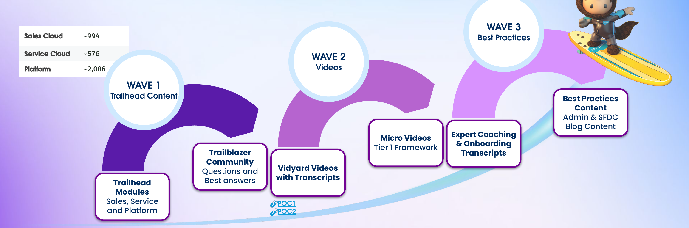

FY27 Strategic Initiatives | Answer Quality & Multi-Modal Content
Why we're here, and the experience we're building toward
AI informs. Community validates. Together, they enable action.
Customers don't need another tool that tells them what to do — they need a guided path that combines trustworthy AI insight with real community validation, so every recommendation feels earned, not guessed.
The trust model for adoption guidance is shifting:
The customer at the center of this strategy
A business owner or department lead who ends up owning Salesforce administration without deep technical training. They are goal-oriented but often feel lost in the platform — self-reliant by necessity, not by preference, and they favor clear, multi-modal guidance (short videos, checklists, examples) over dense documentation.
How we introduce our strategy to outside stakeholders: a rolling content wave that fuels the agent

Our maturity path — bridging strategy into execution
Expand Adoption Guidance beyond Sales and Service Cloud to all Salesforce products (Industries, Data Cloud, Marketing, Commerce, Field Service) with cross-cloud personalization and signal detection.
🎯 83% attrition risk reductionEnable real-time agent personalization via native C360 Data Graphs, providing instant access to user entitlements, adoption signals, and product context without legacy middleware.
🕒 Sub-second API retrievalBuild cross-system data pipeline connecting Agent conversation logs with CSS product adoption data, license activation, and feature usage telemetry for end-to-end impact measurement.
🔗 Multi-Source IntegrationBuild data pipeline to surface CSS Adoption Depth signals, 12-month average scores, and Success Plan metadata for tenant-level personalization.
🕒 Hourly refresh cadenceSurface active product SKUs, Service Contract entitlements, and support tier metadata for SKU-based filtering and Premier content routing.
🕒 Real-time entitlement lookupEstablish unified measurement framework tracking Help Agent performance from entry → engagement → intent → activation → business impact, enabling cohort-based benchmarking and incrementality analysis.
📊 Entry to Activation FunnelBuild Agent UI capability to render embedded images inline with chat responses, supporting responsive display and accessibility standards.
🕒 Image load <500msBuild Agent UI capability to render embedded video players inline with chat responses, supporting VidYard integration and analytics tracking.
🕒 Player load <1sSecure legal approval to ingest and surface Trailblazer Community Q&A content in Agentforce, including UGC usage rights, PII scrubbing requirements, and attribution standards.
🕒 PII scrubbing pre-ingestionExtend personalized onboarding guidance beyond Sales/Service Cloud to Industries (FINS, Revenue), Tableau, Marketing, Commerce, and Field Service for Standard and Premier customers in first 90 days.
🎯 14% → 8.4% attrition targetProvide strategic "why" layer explaining business value and industry best practices, transforming Agent from executor to advisor.
🕒 Strategic ContextExpand the Adoption SubAgent retriever to Financial Services Cloud product documentation, Trailhead modules, and Knowledge Articles now that business readiness criteria are met — the first cloud milestone toward extending Adoption Retriever to all Clouds by end of FY.
🎯 Wave 1 of All-Clouds Expansion (EOY FY27)Enable inline screenshots and diagrams to reduce ambiguity in complex setup instructions for visual learners.
🕒 Visual Aid Inclusion RateSurface video transcripts and embedded players for "watch & learn" experiences, supporting visual learners who struggle with text-only instructions.
🕒 Video → CTA → SetupDeliver task-oriented, step-by-step guidance with sequential click-paths, enabling users to complete tasks without leaving chat.
🕒 57% → 91% RecallIncorporate peer-validated "Best Answers" for edge cases and real-world troubleshooting not covered in official documentation.
🕒 Peer-Validated SolutionsAutomatically filter content to user's entitlements and product context, eliminating irrelevant guidance for features they don't own.
🕒 SKU-Based RelevanceProactively surface next-step guidance based on tenant age and onboarding stage, turning episodic help into continuous coaching.
🕒 ↓ Days to Feature UseProve which content types drive highest task completion via conversion path tracking, enabling data-driven answer quality optimization.
🕒 Source → ActivationSuccess Guidance, Onboarding, and Adoption Prompt Flows
Unauthenticated, Onboarding, or Adoption intent detected
Contextualize using product, entitlement, and usage signals
Match intent to the right guided path (Trailhead / Video / Best Practice)
Escalate to expert or community when confidence is low
Measure completion and feed signals back into personalization
Flow branches by authentication state and journey stage (Unauthenticated / Authenticated-Onboarding / Authenticated-Adoption) to keep guidance relevant to where the customer is.
Key measures we're tracking across the roadmap